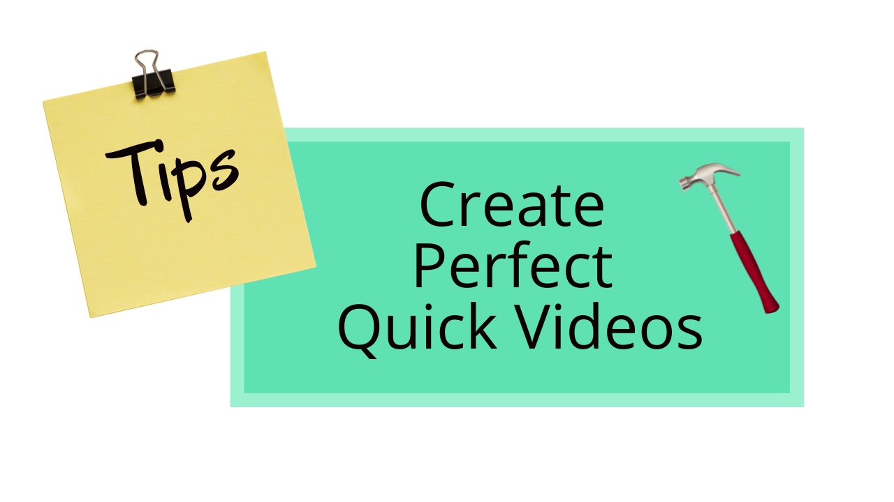

How Health and Fitness on Social Media Encourages Teens to take Drugs
Teens are taking more drugs then ever before, due to the prevalence of fitness social media. Find out why in this blog.

Parasocial
Why is it that many people prefer to stay inside on a Friday night watching their favorite Twitch streamer? Find out in this podcast as our group discusses the topic of parasocial relationships.

Crafting Short Videos
With the popularity of tiktok and now YouTube shorts, quick videos are becoming much more mainstream. In this video I explain some tips for making said videos with the goal of helping others interested in creating this new form of content.